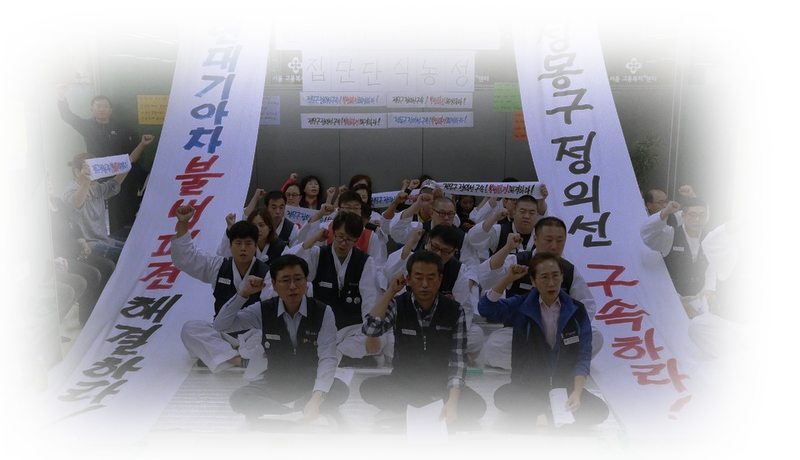

언론정보학과 송민경
먼저 ‘사용자’라는 용어에 주목할 필요가 있다. 노조법 제2조 제2호는 ｢"사용자"라 함은 사업주, 사업의 경영담당자 또는 그 사업의 근로자에 관한 사항에 대하여 사업주를 위하여 행동하는 자를 말한다｣라고 규정하여 ‘사용자’를 정의하고 있다.
여기서 ‘사용자’는 일반적으로 근로자와 직접적·묵시적으로 근로계약을 맺은 당사자로 해석된다. 이 경우 하청업체 근로자로 구성된 노동조합의 교섭요구에 응해야 할 사용자는 원칙적으로 해당 근로자와 사이에 직접적･묵시적으로 근로관계를 맺고 있는 개별 하청업체의 사용자고, 하청업체 근로자에 대하여 직접적 근로계약의 당사자가 아닌 원청업체 사업주는 하청업체 노조에 대한 사용자측 교섭 당사자로서 교섭 의무가 없다.
따라서 이러한 해석에 따르면 원청업체인 현기차에 하청업체 근로자에 대한 사용자로서의 교섭 의무는 없다.
그런데 현기차 하청업체 근로자들이 정규직으로서의 지위를 인정받게 된다면 어떨까. 지난 2017년 2월, 서울고등법원이 현기차의 ‘불법 파견’을 인정했다. 모든 사내하청 뿐 아니라, 현대차와 직접적으로 계약을 맺지 않은 2차 하청업체 직원들도 불법 파견으로 인정됐다.

지난 2010년 현기차의 하청업체 근로자 1941명은 현기차를 상대로 '근로자 지위확인소송'을 냈다. 형식적으로는 하청업체에 소속돼 있지만 실질적으로 현기차의 지휘-명령을 받아 업무를 수행하였기 때문에 정규직으로 인정해 달라는 것이다. 이들은 1, 2심에서 모두 승소했다. 이제 대법원 판결만 남았다.
만약 대법원이 원심을 확정하면 이들은 정규직으로 인정받게 된다. 파견근로자보호 등에 관한 법률(이하 파견법) 제6조의2는 파견이 금지된 업종에서 파견근로자를 사용한 경우 사용사업주가 파견근로자를 직접 고용해야 한다고 규정하고 있기 때문이다. 이 법 제5조제3항은 자동차 등 제조업에서 파견근로를 금지하고 있다. 이 경우 현기차의 하청업체 근로자들에 대한 사용자성도 함께 인정되어 교섭의무를 부과할 수 있다.
그러나 학계에서는 위 판결에 대하여 긍정하거나 비판하는 견해들이 다수 등장하였고 각각의 입장들에서 그 근거와 법리가 엇갈리고 있다. 뿐만 아니라 현기차는 위 판결에 불복해 상고했으며, 해당 소송은 대법원에서 계류 중이다. 따라서 현재로서는 현기차에 하청업체 근로자들에 대한 사용자성을 부과할 명확한 법적 근거가 없다.
한편 2000년 이후 학계에서는 노조법의 ‘사용자’ 개념을 확대해야 한다는 논의가 있어왔다. 사용자 정의규정이 사용자를 근로계약상의 당사자로 지나치게 협소하게 규정함으로써 파견이나 사내하청 등 근로계약상의 사용자와 실제 근로자를 사용자는 자가 다른 ‘다면적 근로관계’에 따른 여러 고용 형태에서 올바른 규범으로 기능하지 못하고 있다는 것이다.
이것이 쟁점화 되었던 사안이 바로 대법원 2010. 3. 25. 선고 2007두8881 판결이다.
“노조법 제81조 제4호에서 규정하고 있는 지배, 개입의 주체로서 사용자는 일반적으로 근로계약상의 사용자를 말하는 것이지만, 근로자와 사이에 직접적 또는 묵시적 근로계약관계가 성립되지 않은 자의 경우에도 위 조항이 단결권을 침해하는 일정한 행위를 부당노동행위로서 배제, 시정하고 정상적인 노사관계를 회복하는 것을 목적으로 하고 있는 것에 비추어 보면, 근로 계약상의 고용사업주로부터 근로자를 공급받아 자기의 업무에 종사시키고, 그 근로자의 기본적인 노동조건 등에 관하여 고용사업주로서의 권한과 책임을 일정 부분 담당하고 있다고 볼 정도로 현실적이면서 구체적으로 지배, 결정할 수 있는 지위에 있는 경우에는 그 한도 내에서 사용사업주는 위 조항에서 정하는 ‘사용자’에 해당한다고 보아야 한다.”
위 대법원 판결은 근로계약을 매개하지 않고 원청의 하청업체 근로자에 대한 사용자성을 인정하고 있다. 이는 노동법상 책임을 부담하는 사용자를 근로계약의 상대방으로서의 사용자에 국한시키지 않고, 근로조건의 전부 또는 일부에 대하여 실질적인 영향력이나 지배력을 행사하는 자 또는 “근로자의 기본적인 노동조건 등에 관하여 현실적이면서 구체적으로 지배, 결정할 수 있는 지위에 있는” 자로까지 확대한 것이다.
이후 학계에서는 사내하청의 경우 노조법상 사용자의 개념을 확대하여 원청이 하청업체 근로자에 대한 사용자가 되는지, 특히 단체교섭의 상대방이 되는지에 대한 다양한 논의가 전개되었고, 최근에는 사용자 책임을 확대해야 한다는 경향이 학설에서도 주류적 견해를 이루고 있다. 이러한 학설대로라면 현기차가 하청업체 근로자들에 대해 단체교섭의 상대방으로서 의무를 질 수도 있다.
그러나 이 문제에 대해서도 대법원의 판결을 바탕으로 한 보다 신중한 논의가 필요하다는 것이 일반론이다.
사용자가 노동조합의 단체 교섭권에 응할 의무는 직접적 묵시적 노사관계에 의해서 발생한다. 일반적인 원청과 하청의 법적 고용관계에 따르면, 원청과 하청 사이의 고용관계가 있기 때문에 하청 직원들과는 교섭할 의무가 없다.
그러나 현기차와 같은 사내하청의 경우, 최근의 각종 판례나 학설은 불법 파견에 대해 파견법상의 사용자 책임을 물어 원청이 하청업체 근로자를 사용한 시점부터 직접 근로계약관계가 존재한 것으로 보고 있고, 집단적 노사관계의 경우에도 사용자 개념의 외연을 확대하여 근로계약관계가 존재하지 않는 경우에도 부분적으로 사용자 책임을 물을 수 있도록 하고 있다. 그러나 이것이 단체교섭에까지 미치는지에 관해서는 아직 대법원 판결을 통해 본격적으로 다루어지지 않았기 때문에 근거가 불충분하다.
요컨대 현행법상 현기차가 하청업체 직원과 원칙상 직접 교섭할 의무가 없는 것은 ‘사실’이다. 그러나 해당 법조항들에 대해 다수의 법원의 판결이나 학설 등이 비판적인 입장들을 취하고 있고, 이러한 논의가 여전히 분명한 합의에 이르지 못했으므로 ‘절반의 사실’로 판정한다.
강성태. "지금 왜 사용자인가?." 노동법연구, .24 (2008.3): 1-22.
강성태. “사용자의 개념에 대한 최근 판례의 동향”. 법무법인 화우가 2010. 10. 20. 개최한 근로자와 사용자의 개념에 관한 심포지움 자료집 72면 이하에 기재된 내용.
권혁. "사용자 개념 확대론에 대한 재검토." 노동법논총, 26 (2012.12): 99-126.
김영문. “사내하도급 근로자와 원청기업의 노동력 제공관계”. 월간노동법률 (2010. 9): 39.
박종희. “사내하도급과 파견의 구별기준 및 불법파견의 법률효과”. 조정과 심판 (2010): 40.
윤애림. "간접고용에서 사용자 책임의 확대." 노동법연구, .14 (2003.6): 147-196.
윤애림. “다면적 근로관계에서 사용자 책임의 확대: 노조법의 "사용자"를 중심으로”. 민주법학, 44(2010.): 51-86.
이철수. “판례를 통해 본 사내 하도급의 법적 쟁점”. 노동법 실무연구 제1권 : 김지형 대법관 퇴임기념, 사법발전재단 (2011): 1-29.
조경배. "사내하도급에 있어서 원청의 사용자성." 노동법연구, .25 (2008.12): 213-235.
조경배. “현대자동차 사내협력업체 불법파견(위장도급) 사건 판례평석”. 노동법연구, .25 (2010): 116.
조성혜. “사내하청 근로자에 대한 직접고용간주규정의 적용”. 월간노동법률 (2010. 10): 75.